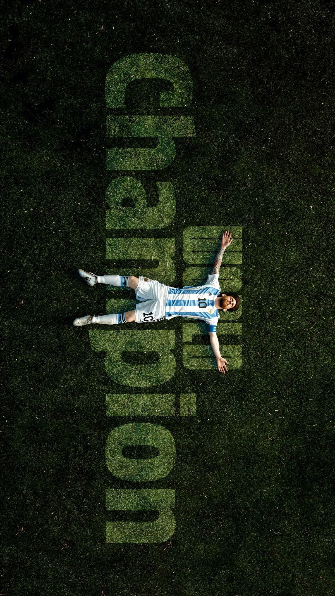
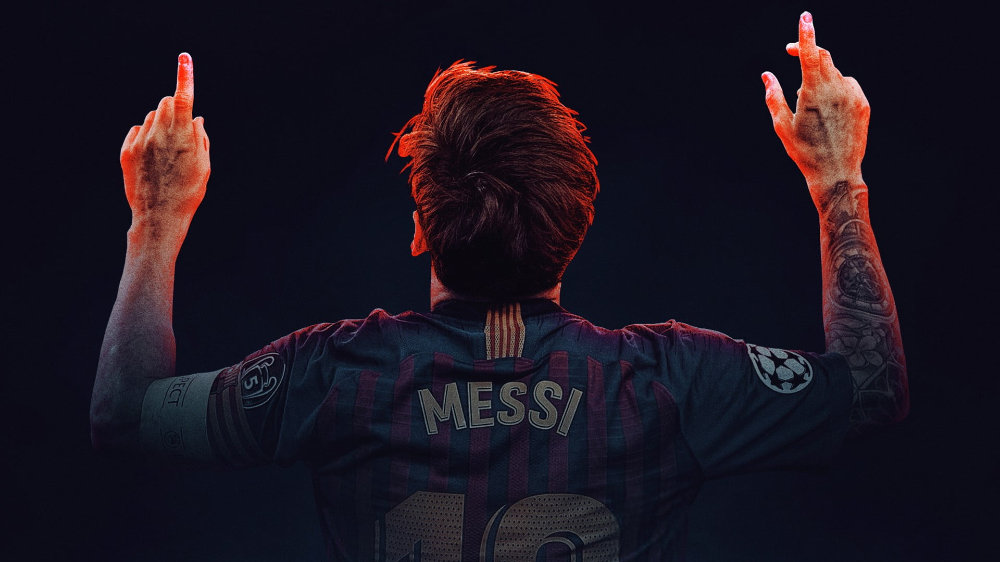

"I always try to do my best, to be the best I can be."— Lionel Andrés Messi · Intercepted Signal
Messi ended the greatest debate in sports. Eight Ballon d'Or awards, a World Cup, and statistical dominance across two decades sealed an argument that may never be revisited.
The Leo Messi Foundation has invested millions in children's health, education, and sport access across Latin America — building a legacy that transcends any football pitch.
From Rosario to Riyadh, from Barcelona to Buenos Aires — Messi's story of resilience, humility, and relentless pursuit of excellence has inspired an entire generation of footballers.
Inter Miami's overnight transformation into a global sporting phenomenon proved Messi's power extends beyond trophies. American football was changed forever with a single signature.